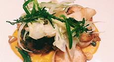

誰でも作れる簡単料理レシピ掲載サイト

 料理別レシピ
料理別レシピ
- 和食
- イタリアン
- フレンチ
- 中華
- アジアン
- エスニック
- 鍋
- デザート
目的別レシピ
- お弁当
- 簡単おかず
- ダイエット
- ベビーフード
- 節約食材
- アレルギー
- シニア料理
新着レシピ
-

季節の彩り
前菜 -

簡単かぼちゃス
ープ -

ヘルシー米粉
パン -

ぷりぷりえび
料理 -

かんたん鴨南
蛮
今だからこそ見直したい「和食」

普段、私たちが何気なく口にしている和食
ですが、その基本は一汁三菜。ご飯、味噌
汁、お漬物の他、主菜（魚またはお肉）、副
菜として季節毎の野菜と豆類で構成されま
す。
昔から「旬の野菜を食べましょう」と言いま
すが、それは素材がじっくりと時間をかけて
蓄積してきた旨みや栄養価が最高になったと
頃でいただいて、効率よく栄養を取り風邪
などの予防をしましょうね、ということで
す。
それでは各季節毎の旬の野菜について調べて
みましょう。
 続きを読む
続きを読む
簡単！おすすめレシピ

季節の食材〜春〜
新たまねぎに春キャベツ、新じゃが、山菜
などなど・・・春の野菜は風味が良くみずみ
ずしいのが特徴です。
それでは春野菜を使ったレシピを紹介しまし
ょう.
 続きを読む
続きを読む

春野菜を食べて花粉症対策？！
春になると花粉症に悩まされる人は多いと
思います。この花粉症、ある食材をとること
で少し緩和されるんです！
さて、その食材とは・・・？
 続きを読む
続きを読む